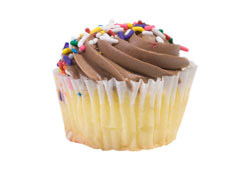

How To Make a Cupcake
Basic Cupcake Recipe
Ingredients
- 2 1/4 cups all purpose flour
- 1 1/3 cups sugar
- 3 teaspoons baking powder
- 1/2 teaspoon salt
- 1/2 cup shortening
- 1 cup milk
- 1 teaspoon vanilla
- 2 large eggs
Directions
Preheat oven to 350 degrees. Line cupcake pans with paper liners. Combine flour, sugar, baking powder, and salt in a large mixing bowl. Add shortening, milk, and vanilla. Beat for 1 minute on medium speed. Scrape side of bowl with a spatula. Add eggs to the mixture. Beat for 1 minute on medium speed. Scrape bowl again. Beat on high speed for 1 minute 30 seconds until well mixed. Spoon cupcake batter into paper liners until 1/2 to 2/3 full. Bake for 20 to 25 minutes or until toothpick inserted in center comes out clean. Cool 5 minutes in pans then remove and place on wire racks to cool completely. Once cupcakes are completely cooled, frost with your favorite frosting recipe or decorate as you desire.